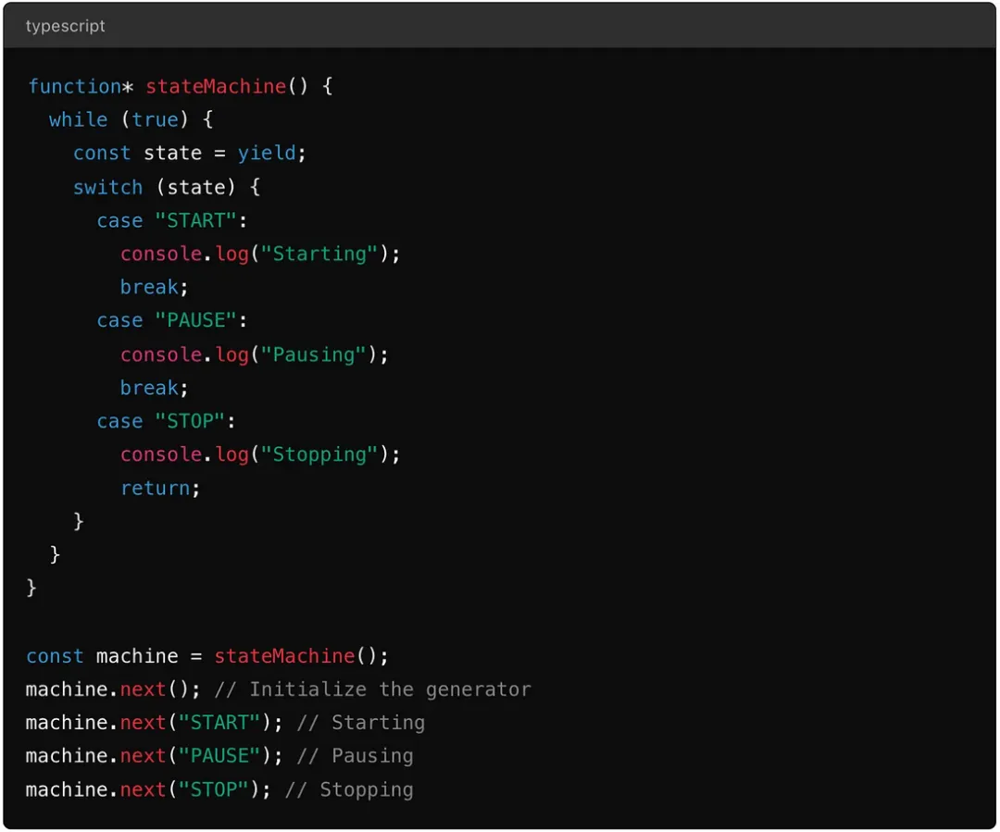

理解生成器在2024年的秘密力量
HaoTian · 2024-09-18 23:00:48
什么是生成器？
让我们从基础开始。生成器是 JavaScript 中一种特殊类型的函数，允许你随意暂停和恢复执行。
与常规函数一次性从上到下执行不同，生成器可以将控制权交回调用上下文，允许对其执行流程进行更细粒度的控制。
这里有一个简单的例子来设定场景：
function* simpleGenerator() {
yield 1;
yield 2;
yield 3;
}
const gen = simpleGenerator();
console.log(gen.next().value); // 1
console.log(gen.next().value); // 2
console.log(gen.next().value); // 3
在这个例子中，simpleGenerator 并不是一次性运行完毕。相反，它在每个 yield 语句处暂停，只有当你显式地在它上面调用 next() 时才会恢复。这种行为正是赋予生成器独特优势的原因。
生成器的魔力：何时何地？
现在，你可能会想，"我应该在什么时候使用生成器而不是 Promise？"好问题！生成器在需要对执行流程进行精细控制的场景中特别有用。以下是一些具体的使用案例：
1. 惰性迭代
生成器在创建惰性迭代器时大放异彩 — 这些是按需生成的值序列。这在处理潜在的无限数据流或大型数据集时特别有用，因为一次性将所有内容加载到内存中是不切实际的。
function* infiniteSequence() {
let i = 0;
while (true) {
yield i++;
}
}
const numbers = infiniteSequence();
console.log(numbers.next().value); // 0
console.log(numbers.next().value); // 1
// 可以一直进行下去...
在这个例子中，生成器产生了一个无限的数字序列，但它只在需要时计算下一个值。这种方法节省了内存并提高了性能。
2. 自定义控制流
生成器为管理复杂的控制流提供了一种独特的方式，尤其是那些异步的控制流。通过将生成器与 Promise 结合，你可以创建读起来几乎是同步的代码，但在底层处理异步操作。
function* fetchData() {
const result1 = yield fetchDataFromAPI("/endpoint1");
const result2 = yield fetchDataFromAPI("/endpoint2");
return [result1, result2];
}
function runGenerator(generatorFunction) {
const generator = generatorFunction();
function handle(result) {
if (result.done) return Promise.resolve(result.value);
return Promise.resolve(result.value).then((res) => {
return handle(generator.next(res));
});
}
return handle(generator.next());
}
runGenerator(fetchData).then((results) => {
console.log(results);
});
在这种情况下，生成器允许你"暂停"执行，直到 fetchDataFromAPI Promise 解决，然后用获取的数据恢复。这种方法在 async/await 成为标准之前特别流行，当你需要比 async/await 提供的更多控制时，它仍然很有用。
3. 状态机
状态机是复杂应用程序中的常见模式，生成器可以用来清晰简洁地实现它们。在特定状态下 yield 的能力使得生成器非常适合管理状态之间的转换。
这种方法为处理应用程序逻辑中的各种状态提供了一种清晰、可维护的方式。
生成器 vs Promise：对决
到目前为止，你可能认为生成器很棒，你说得对！但什么时候应该使用它们而不是 Promise 呢？
生成器：优势
- 精细控制：生成器给你随意暂停和恢复函数执行的能力。这在惰性求值、自定义迭代逻辑或复杂控制流等场景中可能是一个游戏改变者。
- 内存效率：因为生成器按需产生值，它们在内存使用上很高效，特别适合处理大型数据集或流。
- 可读的异步代码：虽然 async/await 已经在很大程度上取代了处理异步操作的方式，但生成器仍然提供了可读性和控制的独特组合，可以使复杂的异步流程更易管理。
Promise：优势
- 简单性和普遍性：Promise 现在是 JavaScript 的一个标准、被广泛理解的部分。对于大多数异步任务来说，它们更简单易用，并且在库和工具方面有更好的支持。
- 并发性：当你需要同时处理多个异步操作时，Promise 表现出色，比如同时进行多个 API 调用。
- 错误处理：使用 async/await，错误处理通过 try/catch 块变得更直接，使得在异步代码中管理异常更容易。
何时选择哪个？
在以下情况使用生成器：
- 你需要精确管理复杂的控制流。
- 内存效率至关重要，你想按需生成值。
- 你正在实现诸如状态机或惰性迭代之类的模式。
在以下情况使用 Promise：
- 你正在处理简单的异步操作。
- 你需要处理并发任务。
- 你更喜欢更简单、更直接的错误处理。
2024 年使用生成器的最佳实践
现在我们已经讨论了为什么和何时使用生成器，让我们深入探讨一些在 2024 年有效使用生成器的最佳实践。
1. 保持简单
生成器可能会增加代码的复杂性，所以要谨慎使用。如果一个任务可以轻松地用 Promise 或 async/await 处理，就没有必要使用生成器。
2. 与 Promise 结合以获得最大效果
生成器和 Promise 并不是互斥的。事实上，它们可以完美地互补。例如，你可以使用生成器来构建异步流程，使用 Promise 来处理实际的异步操作。
3. 注意迭代
当使用生成器进行迭代时，始终要注意何时停止。如果不适当管理，生成器中的无限循环可能会成为一个真正的麻烦。确保你有明确的退出条件，如果你的生成器有潜在的无限运行可能。
4. 彻底测试
鉴于生成器独特的执行流程，彻底的测试至关重要。确保所有可能的执行路径都被覆盖，包括生成器可能意外 yield 或提前终止的边缘情况。
5. 利用 TypeScript 实现类型安全
既然你在使用 TypeScript，确保为你的生成器函数定义类型。这增加了一层额外的安全保障，帮助你在编译时捕获潜在问题。
function* numberGenerator(): Generator<number, void, unknown> {
yield 1;
yield 2;
yield 3;
}
结论
在 2024 年，生成器可能不再是新鲜事物，但它们肯定没有失去魅力。
它们精确控制执行流程的能力，结合其内存效率，使它们成为任何开发者武器库中的宝贵工具。
虽然 Promise 和 async/await 有它们的用武之地，但生成器提供了一种独特的视角，可以简化复杂任务并优化性能。
与任何工具一样，关键在于知道何时以及如何使用它们。
所以下次当你面对一个需要比简单的异步解决方案更多的问题时，考虑一下生成器是否可能是你需要的秘密武器。